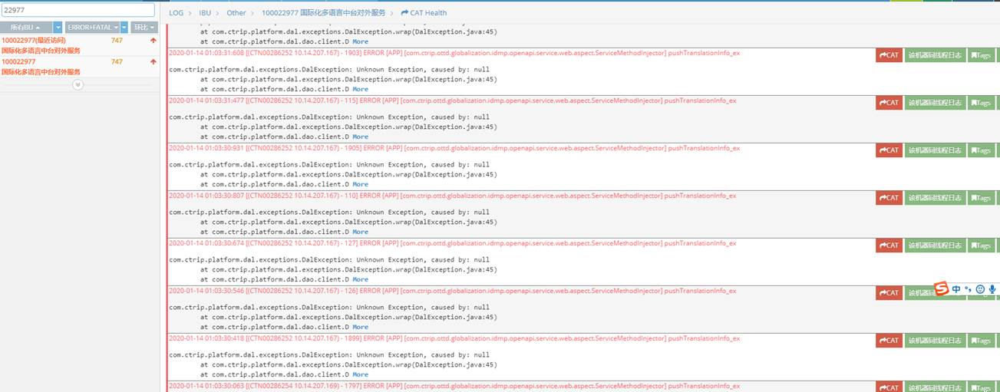
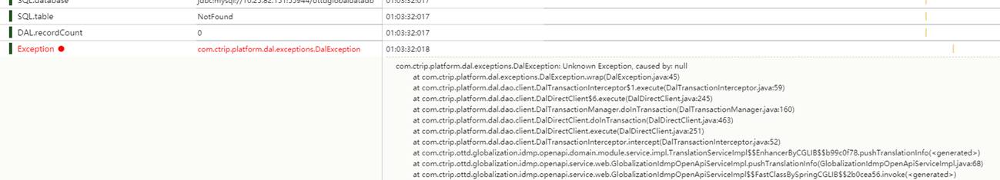
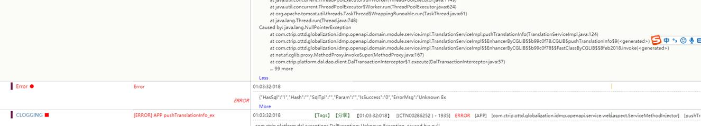
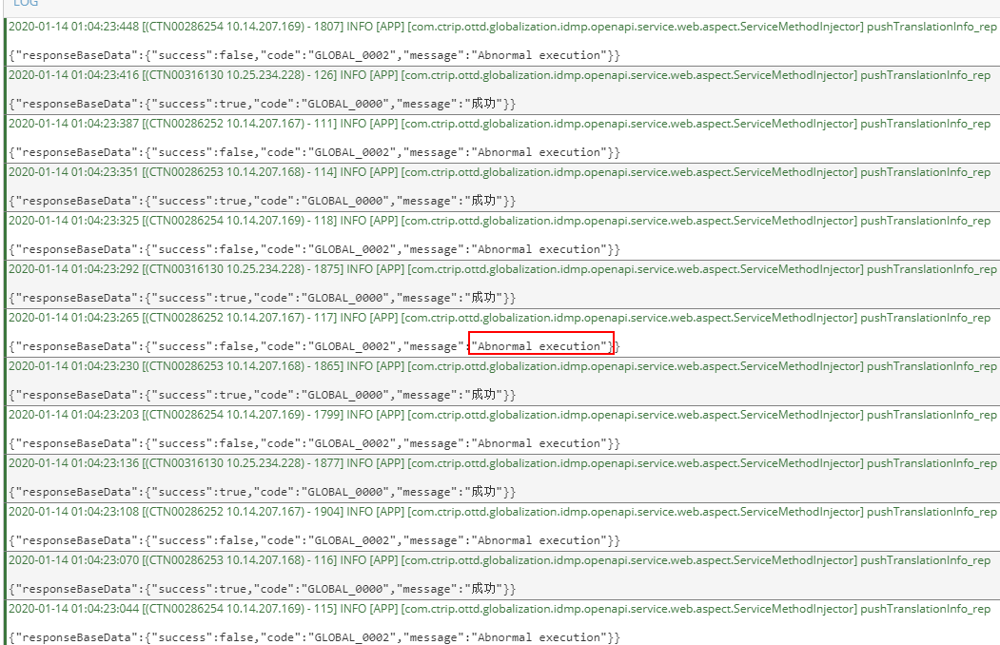
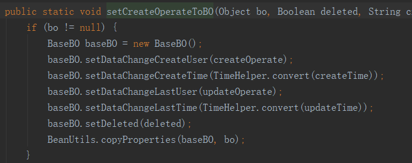
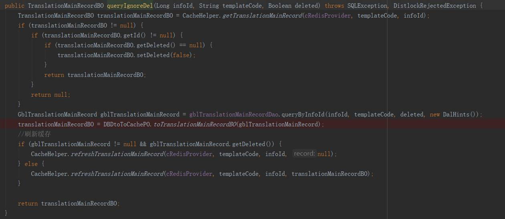

//############################### Step1 ###############################
发件人: wlj王伦佳
发送时间: xxx
收件人: xxx
抄送: xxx
主题: 分享下今天遇到的一个线上bug解决过程
@All，分享下今天遇到的一个线上bug解决过程，根源很简单，过程较复杂
过程
早上，xx跟我说100022977线上出现很多error，我将信将疑，因为一大早过来已经看了最近6个小时的log都没有一个error，然后抱着怀疑的态度查了下，确实有747个error全部集中在今天凌晨1:00-1:04分，错误截图如下：
Log链接：
http://logcube.ctripcorp.com/#/?fromDate=2020-01-13_10:22:00~toDate=2020-01-14_13:21:00~as=22977~changed=title,message,hostSearch,source,tags,relevanceApps,eliminateSources,logType,selectedFrameworkProducts,chartEx,logEx,app,fromDate,toDate,navigatorFromDate,navigatorToDate,visibility,ts~app=100022977~pool=-999~bu=143~hour=24~navigatorFromDate=2020-01-13_13:21:00~navigatorToDate=2020-01-14_13:21:00~visibility=0,0,0,1,1,1,-1,-1,-1,-1,-1,-1,-1~ts=1578979300503~selectedFrameworkProducts=
错误截图：

具体Expetion：


分析
1．TranslationServiceImpl.java 124行NPE，看了下代码如下
这段代码报NPE唯一的可能是translationMainRecordBO.getDeleted()==null，查看了123行代码如下：
translationMainRecordBO是从gblTranslationMainRecord拷贝过来，而gblTranslationMainRecord这个是从数据库拿到的，数据库的deleted字段不可能为null（dbticket里面显示默认值为bit(0)）
另外考虑到这些代码都不是近期改动的，线上运行已经有好几个月了且没有出现任何问题，所以暂且认为这段代码没有问题
之后看到以下日志SQL.table后面NotFound,认为有可能是DBA昨晚在做流浪地球演练
所以咨询了下DBA的大佬，然后@xx告诉我昨晚没有演练，但是我看了日志有两个很奇怪的地方
1．出现这个error是不间断的，如下

2．如上所说，这些报错全部集中在今天凌晨1:00-1:04分
加上先前说的代码线上运行几个月了，这让我很快排除了代码bug，认为有可能是BD查询不稳定导致
……
后面电话咨询了勇铭，得到的结果是DB没有任何问题，此时有点奇怪，但是勇铭很坚持是TranslationServiceImpl.java 124行的deleted=null导致，这时想起之前解决bug的经验，不能只看表面规律，不能怀疑计算机，所谓的奇怪现象都是有背后的逻辑只是我们目前没有发现而已。所以把关注点又转移到这行代码
解决
这时我从uat和fws查找了下日志，发现fws也有几个同样的error，并且fws的版本不是昨天的发布版本，这让我怀疑之前的代码就有问题，所以我用fws的报文在本地测试了下，很难重现这个Exception，debug之后发现是做了缓存前置并不会执行到这里的代码，立马找到fws缓存url并清除了该集群下的所有缓存重新debug，发现translationMainRecordBO.getDeleted()=null,问题找到了，从数据库拿到的dto拷贝到BO的时候deleted丢了，深入发现以下代码逻辑：
BaseBO.setDeleted（）这段是我后来加上去的，先前没有，导致deleted丢失
此时有个很奇怪的现象：既然出现这么重大的bug，为啥线上的代码跑了这么久没有出问题？而偏偏昨天4分钟出现了大量error？
再看下代码发现有以下逻辑：

原来是因为：之前的代码作者已经发现从缓存中查到的delete==null的现象，为了解决这个现象人为使得delete=false，但是没有深究为什么delete会为null，因为数据库的这个字段是非空
先前之所以没有出现这个问题是因为：缓存之后就不会走数据库，缓存的delete被人为赋值导致只要有缓存就不会出现error
那昨天为什么会出现这个问题？缓存大面积失效（目前还没有咨询redis维护人员，但是可以从日志中推理得到是这个原因了）
解决方案：setCreateOperateBO方法中加上丢失的delete即可

结论：虽然原因很简单，但是过程比较复杂，从以上事件中可以看到，
1. 我没有坚持124行代码，被clog的table notfound带偏了方向
2. 迷信之前的代码逻辑没有深究里面的每一行代码，直到fws报错才debug一步步找到原因
3. 当业务逻辑比较复杂之后，每改动一个字段都要小心翼翼，否则就会出现上面的问题
4. 当时遇到缓存delete=null的时候就应该深究里面的原因而不是选择怀疑计算机的处理结果并人为去改变结果
5. …
最后非常感谢@xx发现了这些bug，@xx非常热心地帮助解决了这个问题，特别是对124行的坚持，感谢感谢